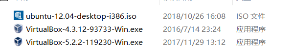
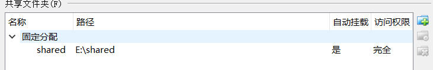
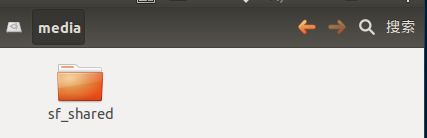

## 第一周:学习嵌入式
一、开发环境搭建
1、安装虚拟机软件
A、选择合适的版本
开源免费
VirtualBox 5.2.2（64位）
VirtualBox 4.3.12（32位）

B、安装注意事项
VirtualBox各项参数中不支持中文
与净网大师有冲突
C、常见问题解决
运行安装程序，选择修复
重新安装 C:\Program Files\Oracle\VirtualBox\drivers\vboxdrv\VBoxDrv.inf（32位与64位，win7与win10默认安装目录可能不同）
2、新建一台虚拟计算机
注意：（运行程序，根据提示依次选择）
A、选择系统类型和版本
sll
Linux
Ubuntu（每次选则ubuntu）
B、设置内存大小
至少1024
C、创建虚拟硬盘
10G
固定大小
3、在虚拟计算机上安装操作系统
A、准备好一个操作系统安装包
B、挂载安装包
设置-》存储-》光盘-》选择ubuntu系统镜像
C、启动虚拟计算机
D、按照引导开始安装系统（不同硬盘读取速度不同会导致安装系统的快慢不同）
选择简体中文
密码设置要简单会频繁使用（每次开机以及运行重要操作都会需要）
4、配置操作系统
关闭自动升级
选择软件源
更新软件源
更新操作系统
sudo apt-get upgrade（sudo 为强制操作 此操作后要输入密码读取权限 但密码不会显示 可以打好后直接确认Enter）
安装功能增强包
配置共享文件夹
添加访问共享文件的权限 `sudo usermod -aG vboxsf $(whoami)`

共享文件挂载后成功时可在虚拟机的文件系统中的Media文件中看到如下。注意：如果没有出现，进行重启（终端命令sudo reboot），进行更新（终端命令sudo apt-get update）。

卸载不需要的软件(加快虚拟机的运算速度，减小内存）
5、安装常用软件
安装C++编译器
安装vim文本编辑器
安装nautilus-open-terminal
（以上都可用终端命令`sudo apt-get install Software（所需软件名）进行下载`）
安装打字练习软件
(终端命令`sudo apt-get install typespeed`)
安装搜狗输入法（默认虚拟机里面没有拼音输入法，只有5笔输入法）
联网后，在浏览器中输入搜狗输入法进行搜索，在搜狗官网上方选择LINUX模式），根据网上的提示完成安装。
UNIX系统介绍
由于贝尔实验室的研究员 肯·汤普逊和丹尼斯·里奇 合作开发，主要应用各种大型服务器，如：电信、银行、各大公司的关键核心业务。
苹果系统的MacOS、iOS都是以它作为内核，该系统收费，质量比较高。
## 二、Linux系统介绍
1、系统介绍
Linux的内核是仿照UNIX系统编写的，然后开源由全世界的程序共同努力开发出的一款操作系统，所以它的系统接口、命令都根UNIX通用。
Linux也叫作类UNIX操作系统，也就是免费版的UNIX。
安卓系统以Linux为内核。
Linux文件系统
注意： Linux管理硬盘的能力非常强，因此不需要显式的分区，也就没有盘符。
2、系统存贮文件的内容
所文件都被管理在根目录下 /
bin 目录下存储的是一些常用的系统命令
sbin 目录下存储的是一些管理用户才能使用的高级命令
boot 目录下存储的是系统启动所需要的数据
dev 目录下存储的是硬件设备文件
etc 目录下存储的是操作系统的各种配置文件
home 目录下存储的是用户主目录，home下会为每个系统用户创建一个以用户名命名的目录（用户主目录），该对它有绝对的控制，一般也只在该目录下操作。
lib 目录下存储是库文件(代码库)
media 目录下存储的是多媒体设备，比如光盘、U盘、共享文件夹。
注意：整个文件系统是以树型结构管理的，可以上下进入，不能左右进入。
3、系统的路径
路径：文件的地址，描述文件所位置的信息。
相对路径：以当前所在位置，描述一个文件的位置，这叫相对路径。
绝对路径：从根目录开始描述一个文件的位置，这叫绝对路径。
特殊路径：
/ 根目录
~ 用户主目录
·· 当前用户的上一级
. 当前目录
4、Linux常用命令
ls：查看当前目录下有哪些文件
-a 显示隐藏文件，在Linux/UNIX文件名以.开头文件默认隐藏
-l 显示文件详细信息
类型、权限、目录层数 用户名 组名 文件大少 修改时间 文件名
cd：进入目录
clear：清理屏幕，Ctrl+l也具备同样的功能。
pwd：显示当前所在的位置
1. 文件相关：
touch filename 创建文件
rm filename 删除文件，删除时不经过回收站，因此删除时要慎重。
cp 源文件 目标位置/新文件名
复制文件，也可以在目标位置取一个新的文件名
mv 源文件 目标位置/新文件名
移动文件，也可以在目标位置取一个新的文件名
mv 也具备重命名的功能。
more/cat/head/tail filename 查看文件
more 显示文件的开头，Enter下一行，空格下屏，q退出。
cat 显示文件的所有内容，直到文件末尾。
head 只显示文件的开头
tail 只显示文件的末尾
2. 目录相关:
目录就是个特殊的文件（Linux/UNIX下一切皆文件）。
mkdir 目录名 创建目录
-p 创建多级目录
mkdir -p a/b/c
cp -frp 源目录 新位置/新目录名
rmdir 删除空目录
rm -rf 目录，删除非空目录
mv 移动和重命名目录时，不需要任何参数
3. 网络相关:
ifconfig 查看网络配置、设置网络配置
sudo ifconfig ethn xxx.xxx.xxx.xxx mask 255.255.255.0
windows下使用ipconfig
ping xxx.xxx.xxx.xxx 测试网络是否连通
Ctrl+c结束
127.0.0.1 回环地址，代表本机，如果不通过则可能是网卡没有正常工作。
windows下默认只执行4次，加 /t 参数会持续执行。
telnet xxx.xxx.xxx.xxx 远程登录服务器
输入用户名
输入密码
采用明文传输数据，安全性低、但速度快，一般公司内部采用这种方式远程登陆。
ssh 用户名@xxx.xxx.xxx.xxx
首次登陆时会询问是否保存密钥，输入yes即可。
ssh zhizhen@47.97.229.46
4.其它相关
find 查找文件
find 位置 -name filename
chmod mmm|+x/w/ filename
1、m代表一个数字
r4 w2 x1
第一个m 表示文件的主人的权限 7
第二个m 表示文件跟文件主人同组的权限 4
第三个m 表示其它用户的权限 4
2、+/- r|w|x
所有用记一起操作，加或减权限
注意：目录必须有执行权限，否则cd命令无法进入。
tar 压缩或解压文件
tar -zcvf pack.tar.gz 被压缩的文件或目录
tar -zxvf pack.tar.gz 解压到当前目录下
grep "字符串" 文件名 查找文件的内容
5.通配符:
* 代表任意多个字符
rm * 删除当前目录下的所有文件
? 代表一个字符
6. 管道：；
把命令的执行结果当作另一个命令的数据源，这种技术叫管道。
ls -l | grep "xxx"
find / | grep "xxx"
7. 重定位：
把命令的执行结果，不再显示出来，而是写入到文件中，这种技术叫重定位。
ls -l > filename 以覆盖的方式定入文件。
ls -l >> filename 以追加的方式定入文件。